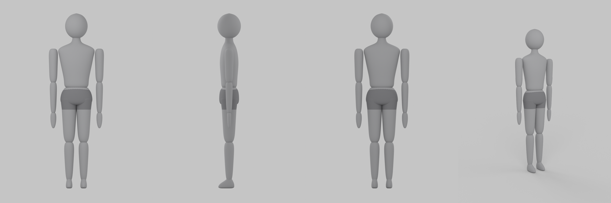
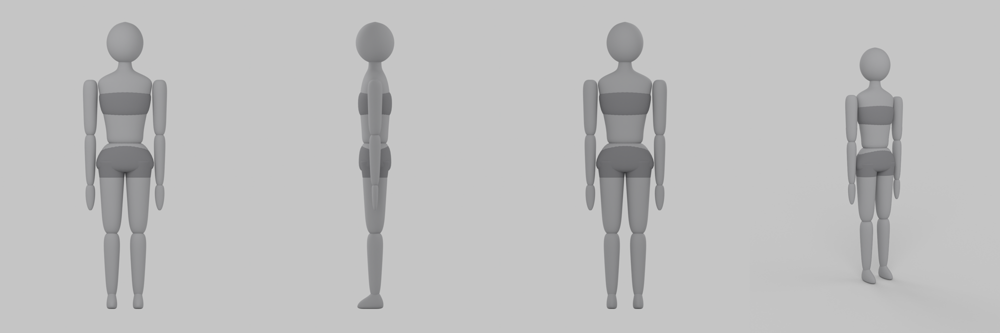

Two stylized R15 body blockouts
Concept sample by KOOM for the "Two Stylized Roblox R15 Body Blockouts" brief. First-pass geometry, original work, built from scratch in Blender. Front, side, back and three-quarter views, matte gray.
Frame_01
Slightly broader shoulders, straighter torso. Boxer-brief coverage as a separate layer.

Frame_02
Slightly narrower shoulders, modestly wider hips. Sports-bra and boy-short coverage as separate layers.

What is in the file
- 15 separate R15-style parts per body: Head, UpperTorso, LowerTorso, and Upper arm, Lower arm, Hand, Upper leg, Lower leg, Foot on each side.
- Joint markers on the standard R15 layout: Neck, Waist, Shoulders, Elbows, Wrists, Hips, Knees, Ankles, RootRigAttachment.
- About 6.5 studs tall. Small tapered hands, neutral grounded feet, arm clearance for a walking swing.
- Coverage is a separate matte-gray layer, so the underlying silhouette stays clean.
This is version 0 from the proportions in the written brief. It would be re-fitted to the exact measurement sheet and the official Standard R15 reference once shared. The editable .blend is delivered on hire. Prepared by KOOM (Hazim Alsalmi). Email hamammalsalmy9@gmail.com to remove this page.